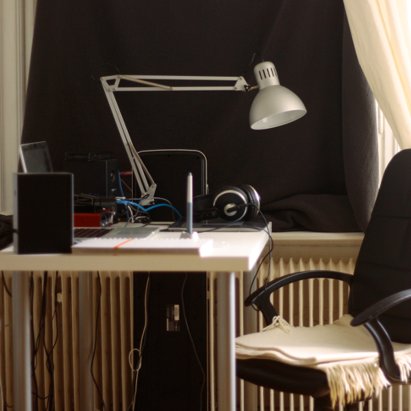

Hi there!
My name is Daniil, I’m a graphic designer. Before I moved to London I lived in many different places, so I made a habit of taking pictures of my work spaces. Below you can see some of them.


- 

For as long as I can remember I have always enjoyed maps, tables, timelines, and could spend hours browsing a world atlas. I am convinced that a well-designed chart can convey useful and important knowledge much faster than text. Not surprisingly the projects I enjoy working on the most nowadays involve data visualisation. Currently I work with a social enterprise that addresses problems of climate change, biodiversity, and sustainability, and I create many graphics for them that range from instructions on how to produce dairy-free yoghurt to diagrams explaining the Earth carbon cycle. Alas, all these maps and infographics are static, and now I want to know how to make interactive ones. My aim is to learn the D3.js library and bring my data visualisation skills on to a much more exciting level. I also have keen interest in interface design, especially in the context of navigating through these interactive visualisations.
When I got to one of the Founders and Coders Monday workshops the atmosphere there was friendly and welcoming, but at the same time challenging. I got stuck on a task several times, and people around me were always eager to help. As I began working through the course requirements I was also happy to share my new knowledge with others. I believe this peer-led sctructure is perfect to learn something as complex as programming. It creates a sense of active, engaged community, and while everyone has their personal aspirations, they support each other in order to achieve a common goal.
I think Founders and Coders does a very important job primarily because programming these days is one of the most significant tools of empowerment. People with coding skills can take matters into their own hands and resolve challenges they may be facing without depending on solutions programmed by someone else. And as programming is increasingly becoming inseparable from our everyday lives I believe everyone should be able to code. I am certain that a world of coders can fix many global problems and advance societies in unprecedented ways. I would like to be the part of that world.